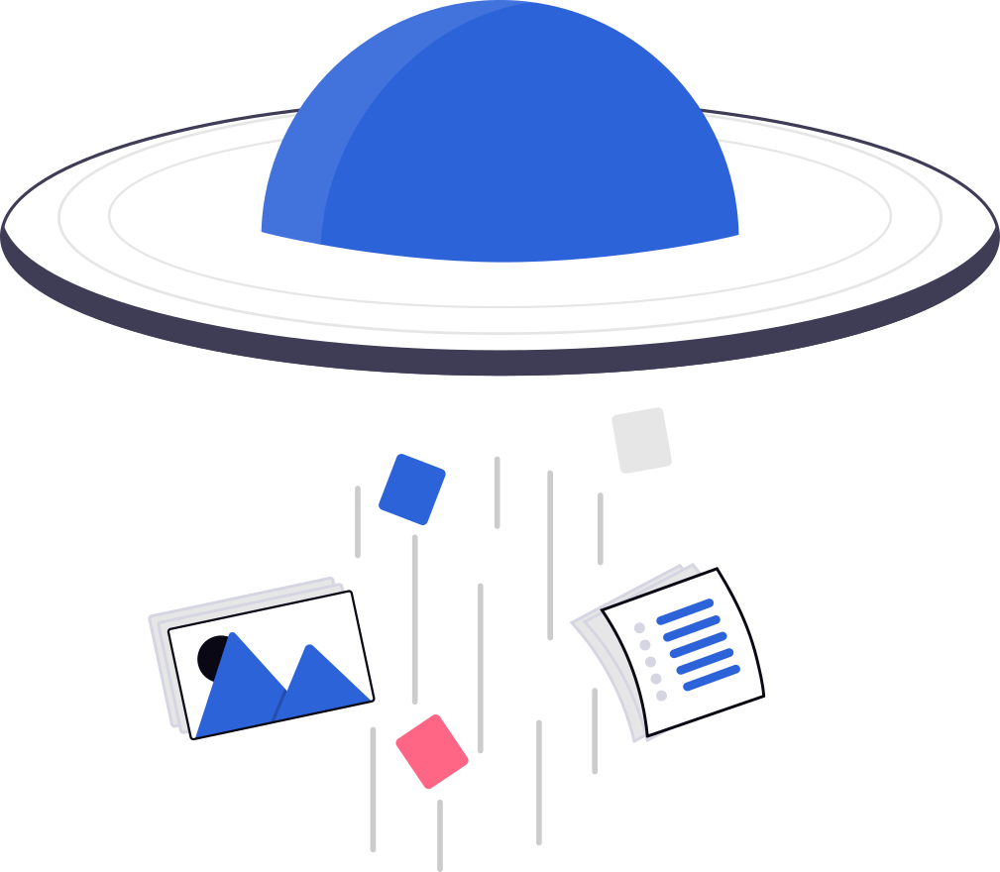

Daily Product Sync
ProcessedAI Summary
ทีมคุยเรื่องโครงสร้าง INNO.One แบบ modular workspace การรวม user experience ระหว่าง Devices, Assets, Helpdesk และ Meeting และการแยก backend engine ของแต่ละ module ออกจาก platform shell เพื่อให้แต่ละทีมสามารถพัฒนาต่อได้โดยไม่กระทบส่วนอื่น
Key decisions
Use one shared platform shell
Each app owns its contextual navigation
Meeting info
LanguageThai
SourceMeeting Agent
TranscriptionCompleted
SummaryCompleted
Action items
2 openFinalize navigation systemOwner: Adisai · due tomorrow
In progressDefine module contractOwner: Backend Team
PlannedTranscript
AP
Adisai00:01:12
ตอนนี้อยากให้ INNO.One เป็น workspace เดียวกัน แต่แต่ละ module ยังแยกความรับผิดชอบกันชัดเจน...
BT
Backend Team00:02:04
งั้นเราจะใช้ platform shell กลาง แล้วให้แต่ละ app ประกาศ route กับ permission ผ่าน registry...
Action Items
Finalize navigation systemAdisai · due tomorrow
In progressDefine module contractBackend Team · no due date
PlannedReview device detail layoutDesign · completed
DoneParticipants
6 peopleAdisai
Host · 28%
Backend Team
22%
Product
18%
Support
14%
Design
11%
QA
7%
Files

No attached files
Files shared during the meeting will appear here.